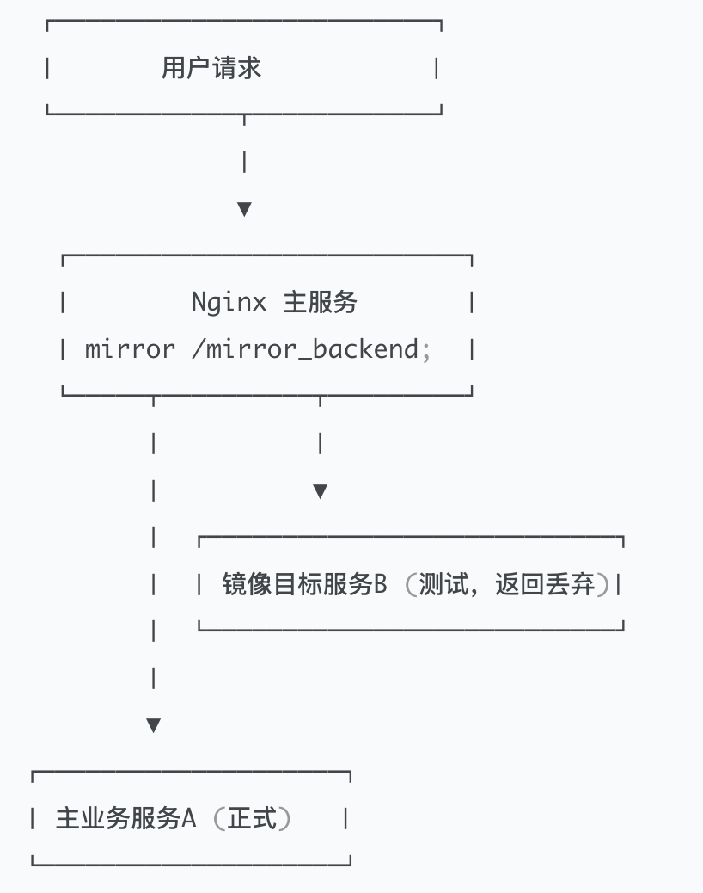

在微服务与持续交付场景中，流量镜像（Traffic Mirroring） 是评估新版本、压测与采集数据的重要手段。本文讲解如何使用 Nginx 原生的 mirror 模块实现流量镜像，包含原理、配置示例、按条件/按比例镜像以及生产注意事项。
1、什么是流量镜像
流量镜像 是指在真实用户访问业务系统时，将请求同时复制一份，异步地发送到另一个后端系统进行处理，而不影响主请求的响应。
简单理解就是：
用户 → A 系统（主处理）
同时 → B 系统（镜像分析）
镜像请求不会返回给用户，也不会影响原业务的性能。
| 特性 | 说明 |
|---|---|
| 异步非阻塞 | 不影响主业务延迟 |
| 简洁配置 | 内置原生模块，无需第三方插件 |
| 灵活控制 | 支持路径、变量、比例条件 |
| 场景广泛 | 灰度发布、压测验证、安全检测等 |
2、常见应用场景
| 场景 | 说明 |
|---|---|
| 🔄 灰度验证 | 将部分真实流量镜像到新版本系统，用于功能验证 |
| ⚙️ 性能测试 | 在真实环境下评估新服务性能 |
| 🧾 日志审计 | 将请求内容镜像至日志采集系统 |
| 🛡️ 安全分析 | 将请求镜像到安全检测系统（防攻击 / 敏感检测） |
3、Nginx Mirror 模块简介
ngx_http_mirror_module 模块从 Nginx 1.13.4 起正式引入，支持 HTTP 请求级别的镜像。
该模块默认已集成于官方 Nginx 发行版中，无需单独编译。
主要指令
| 指令 | 作用 | 位置 |
|---|---|---|
mirror |
指定镜像请求目标（location 或 URL） | http、server、location |
mirror_request_body |
是否复制请求体（body） | 同上 |
4、Nginx Mirror 工作原理

Nginx 在收到真实请求时：
- 正常转发到主后端；
- 同时异步发出一个镜像请求到指定目标；
- 镜像请求的结果会被丢弃，不影响主请求。
5、基本配置示例
http {
server {
listen 80;
location / {
proxy_pass http://main_backend;
# 开启流量镜像
mirror /mirror_backend;
mirror_request_body on;
}
# 镜像请求处理逻辑
location = /mirror_backend {
internal; # 仅供内部调用
proxy_pass http://test_backend;
}
}
}
说明：
mirror：指定镜像请求目标；mirror_request_body on：复制请求体；internal：防止外部直接访问镜像接口；- 镜像请求是异步执行的，不影响主请求的响应速度。
6、进阶用法：多目标镜像
支持将同一请求复制到多个后端系统：
location / {
proxy_pass http://main_backend;
mirror /mirror_a;
mirror /mirror_b;
mirror_request_body on;
}
location = /mirror_a {
internal;
proxy_pass http://gray_backend;
}
location = /mirror_b {
internal;
proxy_pass http://log_collector;
}
7、按条件镜像（灰度/比例控制）
在生产环境中，我们通常希望按条件或比例镜像，而不是全部请求。
7.1 按请求路径镜像
location /api/ {
proxy_pass http://main_backend;
if ($request_uri ~ "^/api/test") {
mirror /mirror_backend;
}
}
7.2 按规则控制（使用 map）
map $request_uri $enable_mirror {
default 0;
~^/api/test 1;
}
location /api/ {
proxy_pass http://main_backend;
mirror /mirror_backend if=$enable_mirror;
}
7.3 按比例随机镜像（灰度场景）
map $request_id $enable_mirror {
default 0;
~^[0-9]*[13579]$ 1; # 模拟约 50% 流量
}
location / {
proxy_pass http://main_backend;
mirror /mirror_backend if=$enable_mirror;
}
8、性能与注意事项
| 项目 | 说明 |
|---|---|
| 🚀 性能 | 镜像请求异步执行，对主请求影响极小 |
| 🧱 限制 | 镜像响应结果不会被使用，也不会出现在日志中 |
| ⚠️ 风险 | 若镜像目标不可达，会增加 Nginx 异步队列压力 |
| 🧠 建议 | 大体量流量建议独立部署 Nginx 作为“流量复制层” |
9、日志与验证
可以为镜像目标服务单独设置日志，验证是否接收到流量：
location = /mirror_backend {
internal;
proxy_pass http://test_backend;
access_log /var/log/nginx/mirror_access.log;
}
或使用 tcpdump 抓包验证：
tcpdump -i eth0 host test_backend -n
10、完整生产级模板
http {
upstream main_backend {
server 10.0.0.1:8080;
}
upstream mirror_backend {
server 10.0.0.2:8080;
}
map $request_uri $enable_mirror {
default 0;
~^/api/v1 1;
}
server {
listen 80;
location / {
proxy_pass http://main_backend;
mirror /mirror_backend if=$enable_mirror;
mirror_request_body on;
}
location = /mirror_backend {
internal;
proxy_pass http://mirror_backend;
access_log /var/log/nginx/mirror_access.log;
}
}
}
11、结语
Nginx Mirror 模块提供了一个低成本、高灵活度的流量复制机制，非常适合在微服务架构中快速搭建灰度验证与测试环境。
- 异步非阻塞，不影响主业务延迟；
- 支持 body、header、任意方法的镜像；
- 通过 map、变量或 Lua 可实现灵活灰度策略；
- 在高流量场景应注意镜像目标容量和网络带宽。
如果需要实现「带比例、灰度开关、统计监控」的生产级流量镜像方案，可结合 Nginx + Lua/OpenResty 或 Nginx + Kafka 实现异步投递。